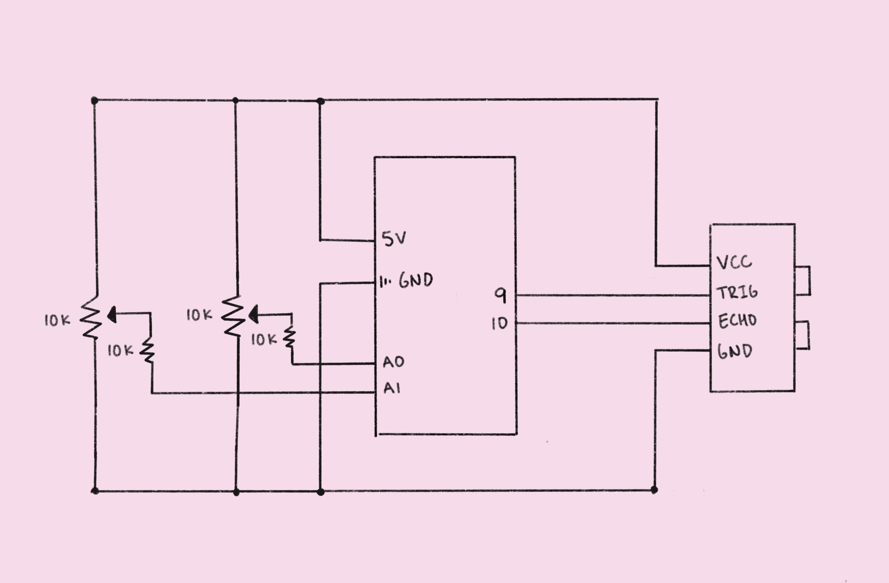

For this final project, we were tasked with integrating our electronic skills into a
product. Feeling inspired by A6: Talking to the web!, I decided to delve deeper into the
world of web creative coding. After some brainstorming, I came up with the idea to build an
interactive art piece that engages various senses, such as sight, sound, and movement.
Originally, I planned to use an ultrasonic distance sensor for detecting motion, a passive
buzzer for playing sounds, and a laptop for generating visuals, as outlined in my initial
concept sketches. However, I made some adjustments to the design based on feedback from my
peers. Instead of the passive buzzer, I opted for the p5.js sound library to enhance the
listening experience. Additionally, I decided to incorporate potentiometers to allow for
more customizable visuals. In the following sections, I will provide more detailed
information about the technical implementation of my project.
Schematic

The schematic for my project's circuit shows how the ultrasonic sensor and each of the two
potentiometers (along with their respective pull-down resistors—10kΩ) are connected to the
Arduino using a combination of digital and analog pins. Specifically, the ultrasonic sensor
is connected to digital pins 9 and 10, while the potentiometers are linked to analog pins
A0 and A1.
Circuit
The circuit operates as follows: pin 9 triggers the ultrasonic sensor to emit a pulse that
reflects back towards the sensor, while pin 10 measures the time it takes for the pulse to
return. Simultaneously, pins A0 and A1 gauge the voltage output of the potentiometers, and
all sensor readings are transmitted to a serial port.
Firmware
const int numReadings = 10; // Number of samples to keep track of
int readings[numReadings]; // Readings from the sensor pin
int readIndex = 0; // Index of the current reading
int total = 0; // Running total
int average = 0; // The average
const int trigPin = 9; // Trig pin for ultrasonic distance sensor
const int echoPin = 10; // Echo pin for ultrasonic sensor
long duration; // Pulse duration
void setup() {
Serial.begin(9600); // Initialize serial communications
pinMode(trigPin, OUTPUT); // Set the trig pin as an output
pinMode(echoPin, INPUT); // Set the echo pin as an input
// Initialize all readings to 0
for (int thisReading = 0; thisReading < numReadings; thisReading++) {
readings[thisReading] = 0;
}
}
int measureDistance() {
digitalWrite(trigPin, LOW); // Set the trig pin to low
delayMicroseconds(2); // Delay for 2 microseconds
digitalWrite(trigPin, HIGH); // Set the trig pin to high
delayMicroseconds(10); // delay for 10 microseconds
digitalWrite(trigPin, LOW); // Set the trig pin back to low
duration = pulseIn(echoPin, HIGH); // Read the pulse duration (low to high)
// Constrain the value to an appropriate range to address erroneous readings
duration = constrain(duration, 0, 1000);
total = total - readings[readIndex]; // Subtract last reading
readings[readIndex] = duration * 0.034 / 2; // Convert pulse duration to distance
total = total + readings[readIndex]; // Add the current reading to the total
readIndex = readIndex + 1; // Advance to the next position in the readings array
if (readIndex >= numReadings) {
// If end of array is reached, reset the read index
readIndex = 0;
}
average = total / numReadings; // Calculate the average
return average; // Return the average
}
void loop() {
// Print the sensor value from pin A0 to the serial port
Serial.print(analogRead(A0));
Serial.print(",");
// Print the sensor value from pin A1 to the serial port
Serial.print(analogRead(A1));
Serial.print(",");
/* Print the current average distance reading from the ultrasonic sensor to the
serial port and start a new line */
Serial.println(measureDistance());
}
p5.js Code
const BAUD_RATE = 9600; // Baud rate for serial communications
const MIN_CIRCLES = 6; // Minimum number of circles on screen
const MAX_CIRCLES = 50; // Maximum number of circles on screen
let port, rotation, soundFile; // Global variables for the serial port, direction of rotation, and sound file
function preload() {
soundFile = loadSound('drone.wav'); // Load the sound file
}
function setup() {
setupSerial(); // Run the serial setup function (below)
createCanvas(windowWidth, windowHeight); // Create a canvas that is the size of our browser window
background("black"); // Set the background color to black
rotation = 0; // Initialize the rotation variable
noStroke(); // Disable drawing the stroke (outline)
blendMode(SCREEN); // Set the blend mode for the canvas to screen
colorMode(HSB, 100); // Set the color mode to HSB (to make a rainbow)
}
function draw() {
const portIsOpen = checkPort(); // Check whether the port is open (see checkPort function below)
if (!portIsOpen) return; // If the port is not open, exit the draw loop
let str = port.readUntil("\n"); // Read from the port until the newline
if (str.length == 0) return; // If nothing was read anything, return.
// Trim whitespace and split on commas, using array destructuring to name each element.
let [a0, a1, distance] = str.trim().split(",");
// Set the number of circles according to the sensor value read from pin A0
let numCircles = round(map(Number(a0), 512, 1023, MIN_CIRCLES, MAX_CIRCLES));
// Set the inner circle radius according to the sensor value read from pin A0
let r1 = map(Number(a0), 512, 1023, 0, 50);
// Set the outer circle radius according to the sensor value read from pin A1
let r2 = map(Number(a1), 512, 1023, 100, 300);
// Set the diameter according to the value read from the ultrasonic distance sensor
let diameter = map(Number(distance), 0, 17, 20, 300);
if (!soundFile.isPlaying()) {
// If the sound file is not playing, play the sound
soundFile.play();
}
let vol = map(r2, 100, 300, 0, 1) // Set the volume according to the outer circle radius
soundFile.setVolume(vol);
if (mouseIsPressed) {
// If the mouse is pressed, set rotation counter-clockwise and don't clear the screen
rotation -= 0.01;
} else {
// If the mouse is not pressed, clear the screen and set rotation clockwise
clear();
background(0);
rotation += 0.01;
}
// Move the origin to the center of the screen and rotate to the current rotation
translate(width / 2, height / 2);
rotate(rotation);
// Calculate the angle we should rotate in between each circle (in radians)
let angle = (2 * PI) / numCircles;
// For each circle
for (let i = 0; i < numCircles; i++) {
rotate(angle); // Rotate to the calculated angle
// Set the inner circle fill color by mapping the current angle to a hue value
fill(map(i * angle, 0, 2 * PI, 0, 100), 70, 70);
// Draw the inner circle with a gradually changing size
circle(0, r1, diameter * (i + 1) / numCircles);
// Set the outer circle fill color by mapping the current angle to a hue value (but opposite)
fill(map(i * angle, 2 * PI, 0, 0, 100), 70, 70);
// Draw the outer circle with a gradually changing size
circle(0, r2, diameter * (numCircles - i) / numCircles);
}
}
// Three helper functions for managing the serial connection.
function setupSerial() {
port = createSerial();
// Check to see if there are any ports we have used previously
let usedPorts = usedSerialPorts();
if (usedPorts.length > 0) {
// If there are ports we've used, open the first one
port.open(usedPorts[0], BAUD_RATE);
}
// create a connect button
connectBtn = createButton("Connect to Arduino");
connectBtn.position(5, 5); // Position the button in the top left of the screen.
connectBtn.mouseClicked(onConnectButtonClicked); // When the button is clicked, run the onConnectButtonClicked function
}
function checkPort() {
if (!port.opened()) {
// If the port is not open, change button text
connectBtn.html("Connect to Arduino");
// Set background to gray
background("gray");
return false;
} else {
// Otherwise we are connected
connectBtn.html("Disconnect");
return true;
}
}
function onConnectButtonClicked() {
// When the connect button is clicked
if (!port.opened()) {
// If the port is not opened, we open it
port.open(BAUD_RATE);
} else {
// Otherwise, we close it!
port.close();
}
}
Physical Prototype
For the physical aspect of this project, I constructed a cardboard enclosure to house the
circuitry. It features a front opening for the ultrasonic sensor, a top opening for the
potentiometers, and a back opening for the wiring. If I were to work on this project again
in the future, I would extend the knobs on the potentiometers for easier access.
Operation
The main methods of operation include: (1) move some object back and forth across the
ultrasonic sensor to change the size of circles on the screen, (2) adjust the potentiometer
connected to pin A0 to change the radius of the inner circle along with the overall number
of circles, (3) adjust the potentiometer connected to pin A1 to change the radius of the
outer circle along with the volume of the background music, (4) press the mouse to reverse
the rotation of the circles and turn off the clear function. Method 1 is represented in the
GIF. See the demo video for representations of all other methods.
Demo
Notes
Readings from my ultrasonic sensor would spike randomly, preventing the visuals from
displaying properly. To address this issue, I had to constrain the duration variable in my
firmware to a range of 0-1000. If I could improve anything about my project, it would be to
develop a more robust method of processing the sensor data and stabilizing the readings.
Hopefully, this would help reduce delays in function execution and make everything more
responsive.